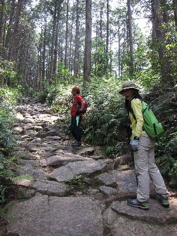
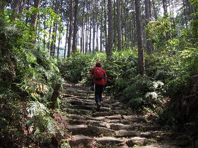
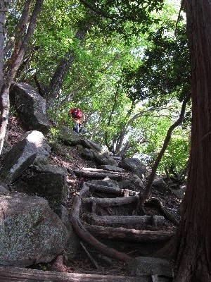
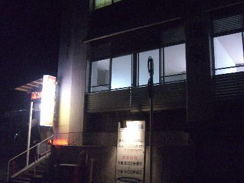
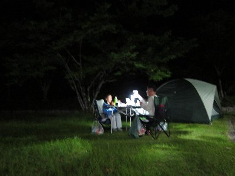
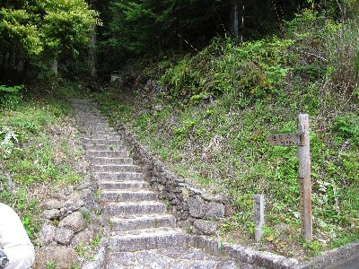

熊野古道トレッキング | 2011年5月 幹事：suger |
|---|---|
| 熊野古道は熊野三山（熊野本宮大社、熊野速玉大社、熊野那智大社）に参るための昔の道なんです。幾つかルートが有ったようですが、私たちが歩くメインは、紀伊半島東回りの伊勢路（東熊野街道）で、江戸時代以降、盛んに歩かれるようになった庶民の道だそうです。 現在でも、当時の道が残っている所があり、それが今の熊野古道です。古道は何箇所にも点在しているようでして、それぞれに名称が付いています。 苔むした石畳みが有名ですよね。前から行ってみたくて、熊野古道フリークであるsugreに引率をお願いしました。 静岡を6時に出発し、掛川から高速で一路三重県へ。途中、東名阪で渋滞があったものの、11時半には目的地、道の駅「海山」に到着しました。ここでお昼を食べて熊野古道に出発です。ちなみに、お昼は「サンマの竜田揚げ丼」を頂きました。こちらはサンマが名物らしいです。サンマ寿司もありましたから。 | |
 ココが入り口です。 この石畳は最近造ったのでしょう。 |  こんな感じの石畳 |
| 1ヵ所目＜馬越峠＋天狗倉山＞ 天気予報は確か曇り、でも晴れ。 まずは馬越峠という熊野古道です。入り口で浜松から来たという、おばちゃん集団に会いました。やはり静岡でも人気が高いのか。 馬越峠は読んで字のごとく馬で越す峠らしく、石畳みの道幅が広くて快適です。 以外に傾斜がきついように感じました。でも、石畳みのお陰か、それほど苦しくありません。 周りは杉林ですが、下草にシダ類が生えていて、静岡の山とは雰囲気が違います。大きな石畳みと、緑のシダ類、まっすぐ伸びた杉。良い感じです。 この大きな石を敷くには大変だったろうと、昔の人に感心するばかりです。今の登山道より、はるかに快適です。まあ、この道が国道みたいなものだから、力注いだんでしょうが。 1時間も歩くと、峠に到着します。ベンチがあって休憩できます。しかし、一部は良いものの展望はあまりよくありません。 ここから天狗倉山へ行くルートはオプションです。熊野古道ではありません。 古道でなくなった途端に、石畳みもなくなり、静岡の賤機山に登っているような道になります。細くて険しいです。 途中かなり傾斜が厳しく、階段状になっているものの、蹴上幅が大きく大変です。見上げるような階段を登っていくと道が二つに分かれます。どちらを行っても同じですが、今回は右（南）ルートへ。ここまでくれば天狗倉山まですぐです。 山頂（標高522m）にはタラップが付いた大きな岩があります。この岩の上が山頂らしいけど、木が生い茂り、あまり眺望は良くありません。岩の下の方が海側が見られて気持ちいいです。尾鷲湾が望めます。 海が綺麗だな〜 | |
|  良い感じでしょう〜 それにしても、階段状の道です |  峠から天狗倉山への道 |
 天狗倉山から見る尾鷲湾 | |
| ひとしきり眺望を楽しんだ後は、急いで下山。本日のキャンプ地は、熊野川の上流方面なので、ちょいと距離があります。暗くなる前にテントは張り終えたいので急ぎます。 途中のスーパーで、本日の夕食を買って、熊野川上流の川湯野営場へ。テントを張り終えたら、もう辺りは暗かったです。 夕食前に近くの川湯温泉共同浴場（250円）に浸かって本日の疲れと垢を落しました。しかし、この温泉熱かった。 今回の夕食は出来あいを買ってます。作るのが面倒なので手抜きです。 私はサンマのお寿司。サンマの半身がそのままお寿司のネタになってます。切ってはありますが。そして、天ぷら詰め合わせと、冷やしラーメン（半額だったから）。 ハッキリ言って食べすぎです。空腹時にスーパーに行ってはいけませんね。これとビール＆ワインでご機嫌です。 | |
|  川湯温泉共同浴場 |  芝生の上で夕食。手持ちだから手ぶれ・・ |
| 二日目。どんより曇り空の朝。ときおり小雨。 朝食はやはり手抜きで、レトルトご飯とちょっと高いレトルトカレー、ドリップコーヒーです。楽で良いですね。楽した分、ちょっとマッタリタイム。 ２ヵ所目＜通り峠＋丸山千枚田＞ 本日の熊野古道は、通り峠です。車を置いたところから、ちょっと歩きます。 通り峠入り口で、ガイドのおじさんから熊野古道のパンフレットやら、ボールペンを頂きました。ここで貰った熊野古道伊勢路というパンフレットは良いですよ。冊子になっていて、たぶん全部の熊野古道（三重県内だけかな？）の場所とルートを示しています。通り峠の詳細地図も貰いました。 通り峠は、馬越峠より狭く、薄暗い雰囲気です。石畳もちょっと荒れた感じですかね。ここも峠から丸山千枚田展望台にいける寄り道コースがあります。ここは行った方が良いと思いますよ。階段の数が多くて大変だけど、千枚田を見下ろすことが出来る絶好の場所です。 | |
|  通り峠入り口 |  こちらはチョット道が狭い |
| 丸山千枚田は、傾斜地に狭かろうが小さかろうが、出来る限りの田を作り、その田の数が最盛期は二千枚以上という場所で、いわゆる棚田なのですが、山間に美しくカーブを描く棚田は、見ていて飽きません。今回は、ちょうど田植えが終わったばかりで、田には水が張られ、空の明るさが反射して綺麗です。稲が大きくなると張られた水が見えないし、水が張る前じゃね〜。前に熊野川カヌーで来た時は、水を張る前だったので、イマイチ感動が無かったけど、今回はタイミングが良い。 展望台で写真を撮っていると、団体さんが登ってきました。狭い展望台では大変だろうと早々に下山。写真は撮ったからOK! 通り峠を抜けて丸山千枚田へ。物凄い極小の田もあるけれど、結構良い大きさの田も沢山あります。展望台（千枚田にも展望台と称するあずまやがあります）まで来ると、いきなり豪雨。土砂降りです。ちょうど屋根が有るところだったので良かった。 雨が降り始めると、周りから蛙が鳴き始めました。日本の風景ですよね。 しばらく待っていると雨が止んだので、帰りは舗装された道で駐車場まで帰りました。 | |
 通り峠展望台から見た丸山千枚田 綺麗だよね |  一つの田はこんな感じ |
| 今回の旅はここまで。 丸山千枚田は、夕焼けに染まる時も良い感じらしいので、次回はそんなチャンスを狙ってみたいですね。 熊野古道は、想像より歩きました。日帰りハイキング気分で行った方が良いでしょう。（私は散歩位の気持ちだったので） 普段行くハイキングとは違った風景と出会えるかもしれません。また行きたいです。 写真＆コメント by べっしー | |